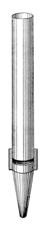
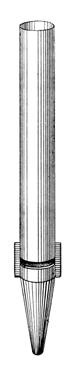

|
Stentorphon Greek Stentorphone Greek |
These names have been used for loud flue stops as early as 1888 (see examples below). According to Wedgwood, it was originally a very large scale wooden or metal flute used in America and Germany, sometimes having double mouths. Skinner, on the other hand, calls it a large-scale Diapason. Audsley describes its tone as having �great breadth, richness and dignity�.
In the late 1800's a German organ builder named Weigle invented and patented a class of loud, high-pressure metal flue stops with mouths that extended across half the pipes' circumference, similar to steam whistles. Wedgwood credits Carl Weigle (1810-1882), but Audsley credits his son Wilhelm Theodor Friedrich Weigle, quoting patents granted in 1893-94. Weigle named these stops with the prefix Stentor, after the legendary Greek herald of the Trojan war, who Homer described as having a voice as loud as fifty men. His invention was popular for a few decades. Grove calls its tone �nondescript�, Wedgwood criticises it for having defective speech, and Audsley speaks disparagingly of it. The illustration to the right is Wedgwood's; the one below is Audsley's.
See also Seraphonflote.|
Stentor Bombarde Stentor Cornet Stentor Diapason |
Stentor Diaphone Stentor Gamba Stentor Horn Stentor Mixture |
Stentor Octave Stentor Sesquialtera Stentorflöte |
Osiris contains 18 examples, all at 8' pitch except for one at 4'.
Stentorphone 8', Solo; Trinity Methodist Church, Denver, Colorado, USA; Roosevelt 1888.
|
Original website compiled by Edward L. Stauff. For educational use only. Stentorphone.html - Last updated 15 December 2001. |
Home Full Index |